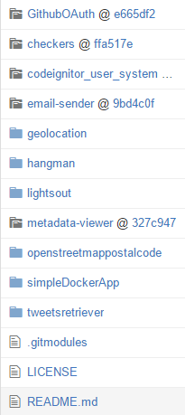
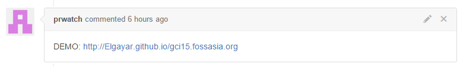
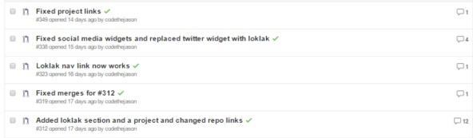
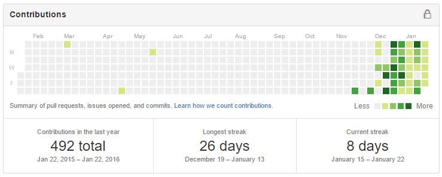

As we all know, Google Code-in 2015 is sadly coming to a close on January 25, 2016. In this blog post, I will describe my wonderful experience working with the awesome FOSSASIA community while learning tons of new stuff. I would like to thank the admins Mario Behling, Hong Phuc Dang, and Mohit Kanwal for making this FOSSASIA’s participation in GCI possible. I would also like to thank all the mentors for guidance and support.

I entered the contest right from the beginning: December 7, 2015. FOSSASIA instantly jumped out at m while browsing the list of organizations. I liked the mission of spreading free and open source software to form a better future with Open Technologies and ICT and promoting growth in science in youth. I decided to dedicate my time with FOSSASIA for the entire length of Google Code-in. I was so excited to learn new technologies and put my programming skills that I have learned before into use.
My projects varied widely ranging from hangman in JavaScript to a user management system in PHP Codeignitor. I tried to claim a variety of tasks but ended up mainly focusing on Javascript tasks. I had a chance to learn NodeJS and apply it to a GitHub OAuth application. My favorite application was my checkers app. It is completely based on objects including the board, pieces, and tiles. This object oriented design I learned by reading You Don’t Know JS makes it easy to understand the code and improve it. A few other people used this through GNU Licensing to accomplish their tasks (i.e. yasoob, shiftsayan).
The Pharo tasks created by eMBee (Martin) were especially interesting because I learned a computer language I had never seen or heard of before in my life. The language was completely different than what I was used to seeing (for example, operators in Pharo are actually binary messages); it is probably one of the most difficult languages I have learned (also difficult to find quick answers because of the small community). It took some time for me to get used to it, but I ended up making a light-sout game, a user management application, a web application (which was very different from a web application I would build on PHP, NodeJS, or Python), and a REST API. You can see my packages here.

I made many contributions during the course of GCI to Loklak-Webtweets, WhatcanIdoforFOSSASIA, and more. I built a GitHub PR Autoresponder bot to comment the preview link each time someone opened a pull request on the FOSSASIA GCI student site. I will keep improving it in the future, and one of the improvements will be porting it to NodeJS. A sample post made by prwatch is shown below:

I did not know anything about the GitHub API or webhooks before this task; I did not know GitHub offered so many management tools to take control of the project. Though my previous knowledge of GitHub was a huge help to me, there were no merge conflicts or other issues to deal with. This experience gave me the taste of what open source collaboration is like with Git (and also the annoyances of merge conflicts). I got a chance to put the objectives I learned in school into use in real world applications and to extend my knowledge of Git further.
I also contributed to the GCI Student Site by replacing the twitter widget with a loklak implementation, improving the blog section dramatically, adding the loklak peers and footer section, and doing a lot of other contributions to improve the overall user experience. Special thanks to Mario Behling, Jigyasa Grover, Aruna Herath, Sudheesh Singanamalla, Manan Wason, and Nikunj Thakkar for working with me on the GCI site and other side projects. I implemented Loklak’s search API on the 2015 and 2016 FOSSASIA event sites as well as on fossasia.org. I helped others with issues on GitHub and also invited a few of my friends to join GCI with FOSSASIA (i.e. aristochaotic, scorpianz1525). I was also involved with contributing to loklak_webclient, showing tutorials on how to setup Loklak, and implementing it on all of the FOSSASIA event sites and the FOSSASIA GCI student site with the mentors listed above and Orbiter.

FOSSASIA did an awesome job as an organization for GCI. All the mentors were helpful and guided me towards my goals. In the beginning, it took a while for me to be added to the FOSSASIA GCI Students group, but the application that roonyh (Aruna Herath) built will allow all mentors to add students to the group (FOSSASIA GCI Companion), speeding up the process next year. I also thought the task instances could be better managed as in some cases the task was still open while it was already accomplished. More specialized varied ‘learning’ tasks could be added (i.e. learning electron with NodeJS), but the variety of tasks this year was pretty decent.
I learned more from this contest than I have in any classroom environment. I learned new programming practices, used services to make development more efficient, fiddled with new languages, and had a chance to utilize the concepts I learned previously. The most important thing I learned about by far is open source. Open source allows everyone to benefit from the freely available source code. It also allows the software to be more secure, flexible, and “featureful”, increasing the quality of the software. Let us take a look at my commit history:

I had never been engaged in any open source project before, but after GCI I will now continue to stick with FOSSASIA and explore other projects that interest me. Knowing I can gain experience and help the world at the same time is a wonderful feeling. Anyways, I hope fellow students also enjoyed their time at GCI and will continue to contribute to open source! Good luck to all!
22 Jan 2016 #gci #experience #wrap-up #open source #projects